{kind=link}
Personalized Treatment
You will receive a full individualized treatment
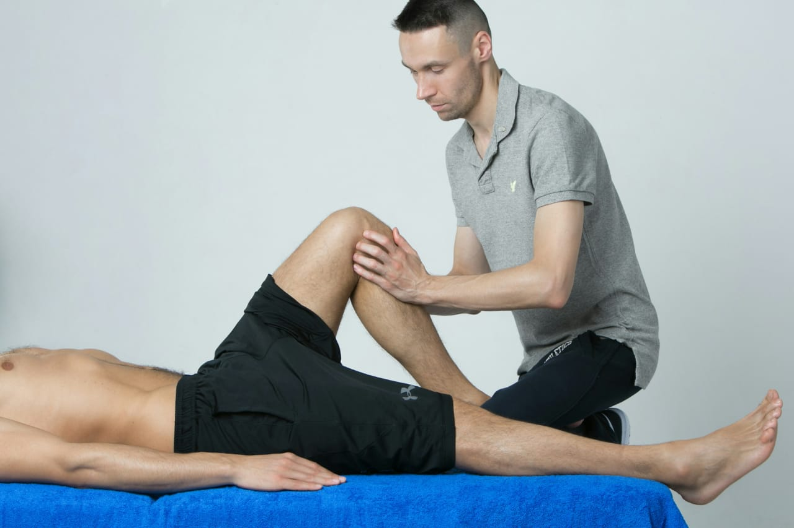
Year of Experience
Happy Patients
Physiotherapists
Equipment & Techniques
Choose area of Pain
Headaches can come from many causes, like stress, poor posture, or muscle tension. The key to relief is finding the source of the problem. Instead of just masking the pain with medication, our physiotherapy and targeted care help reduce headaches for good.
Read more >>Your temporomandibular joint (TMJ) can become painful or frozen, making it difficult to eat and talk. TMJ syndrome can also contribute to headaches and neck and shoulder pain. We use the latest evidence-based therapies and technologies to eliminate TMJ syndrome and restore normal jaw function, without drugs or surgery.
Read more >>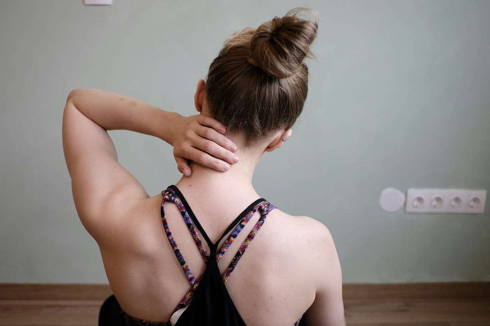
Neck pain can appear from long hours at a desk, bad posture, or muscle strain. Treating the root cause is essential to lasting relief. Our therapy focuses on restoring movement and strengthening your neck so you can feel comfortable again.
Read more >>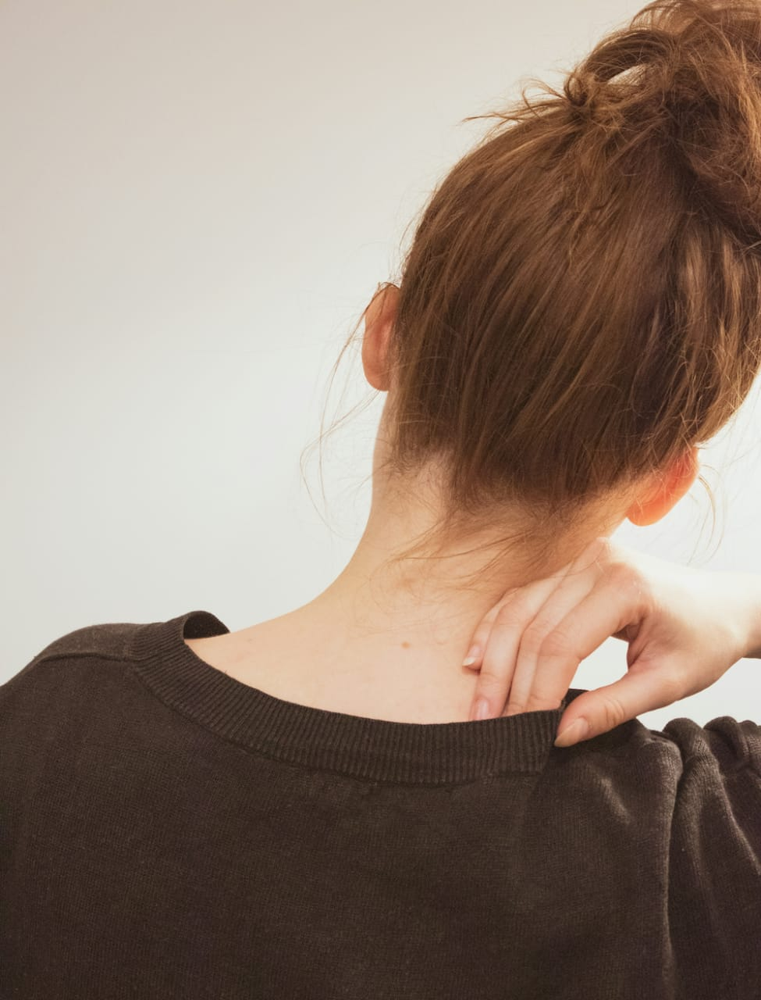
Shoulder pain may result from injury, overuse, or tight muscles. By addressing the source of discomfort, we help improve strength, mobility, and reduce pain, letting you use your shoulder naturally again.
Read more >>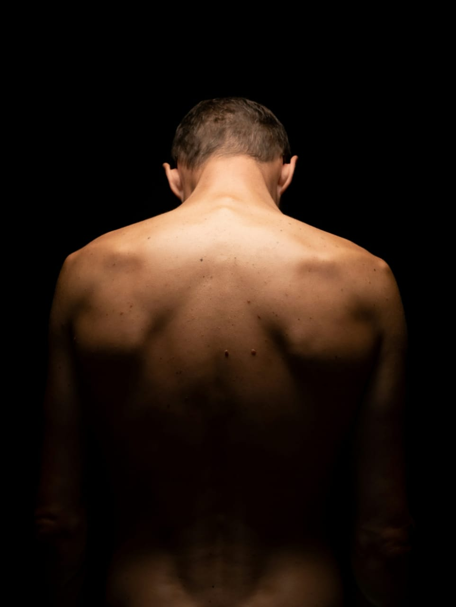
Back pain often develops from poor posture, weak muscles, or repetitive strain. Treating only the symptoms won’t last. Our physiotherapy targets the cause, relieving pain and improving your back’s strength and flexibility.
Read more >>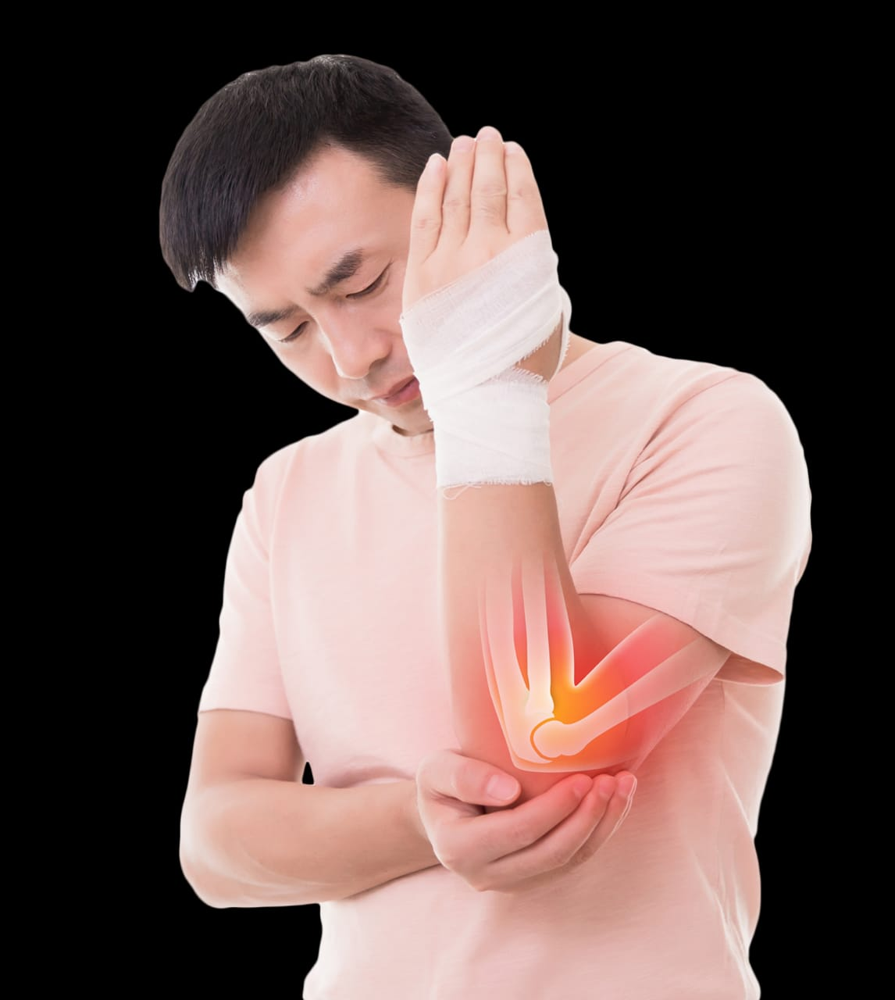
Elbow pain is often caused by overuse from sports, exercise or occupation. Sports like golf, tennis, and weight lifting are often at the root of elbow pain. Carrying heavy objects with one arm can also strain your elbow. Physical therapy helps you eliminate elbow pain and restore pain-free movement, while teaching you to avoid it in the future.
Read more >>Back pain often develops from poor posture, weak muscles, or repetitive strain. Treating only the symptoms won’t last. Our physiotherapy targets the cause, relieving pain and improving your back’s strength and flexibility.
Read more >>Pelvic pain affects both men and women, and is often ignored or undertreated. It can affect reproductive health and interfere with daily activities. The pelvic pain specialists at NYDNRehab will get to the source of your pelvic pain and help you eliminate it, so you can get back to doing the things you love.
Read more >>Your hips play a pivotal role in stabilizing your pelvis and upper body, and they withstand massive force loads during physical activity. Hip and groin pain can arise from overuse during sports and exercise, but it can also stem from being out of shape and overweight. The hip pain specialists at NYDNRehab can help you get rid of your hip pain and restore healthy function, without drugs or surgery
Read more >>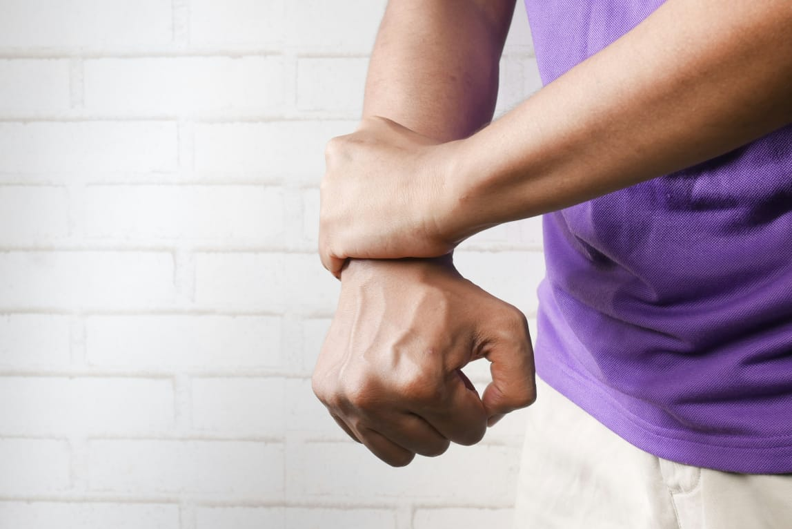
Technology has transformed our world, but its daily use is causing wrist pain and dysfunction for millions who keyboard for hours on end. Carpal tunnel syndrome and other issues are becoming increasingly common, and surgery is rarely the solution. At NYDNRehab, we use conservative treatment and minimally invasive therapies to restore pain-free wrist function.
Read more >>Knee pain can come from weak muscles, joint strain, or previous injury. Focusing on the underlying cause, our therapy strengthens supporting muscles and restores healthy movement so you can walk, run, and climb comfortably.
Read more >>Foot or heel pain can result from overuse, poor walking patterns, or tight tissues. Instead of just masking the pain, we address the root problem to improve your movement and help you walk pain-free.
Read more >>Foot or heel pain can result from overuse, poor walking patterns, or tight tissues. Instead of just masking the pain, we address the root problem to improve your movement and help you walk pain-free.
Read more >>Helping people move better, recover faster, and live without pain.
Dr Physio Raheb is a professional physiotherapy and rehabilitation center led by Dr. Ismail Khan, an experienced physiotherapist dedicated to helping patients recover from pain, injuries, and movement problems. We treat patients of all ages and focus on providing care that is personal, honest, and effective.
Dr. Ismail Khan believes that every patient is different. Instead of only treating symptoms, we carefully assess the root cause of pain and create a treatment plan that supports long-term recovery. Our goal is to help you move better, feel stronger, and return to your daily life with confidence.
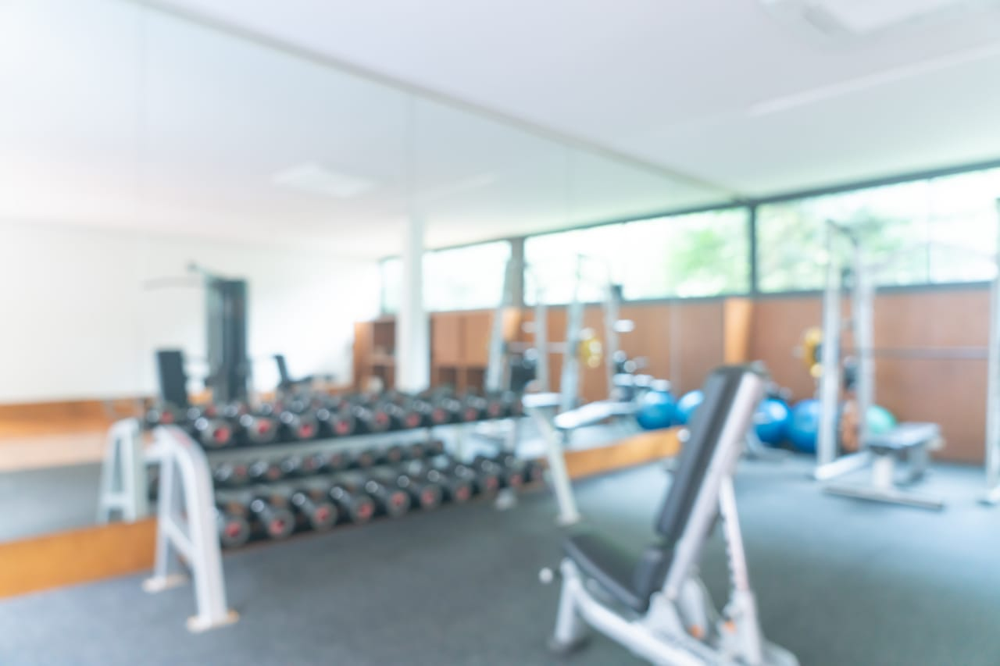
Dr. Ismail Tareen is a highly qualified Doctor of Physical Therapy with a strong commitment to providing advanced physiotherapy and rehabilitation services. As the Founder & CEO of Dr Physio Rehab, he aims to deliver quality patient care through modern treatment techniques, clinical expertise, and personalized rehabilitation plans.
With experience in treating musculoskeletal conditions, sports injuries, chronic pain, and mobility problems, Dr. Ismail focuses on helping patients restore movement, reduce pain, and improve their overall quality of life.
Read more >>>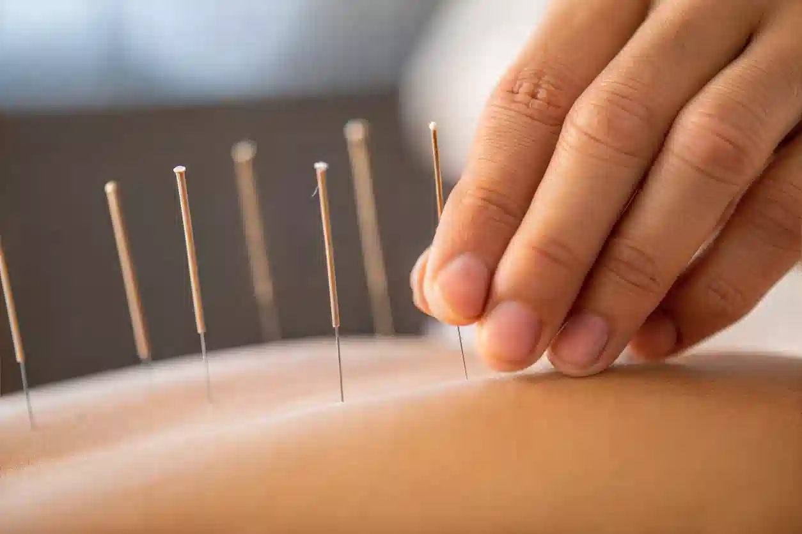
Dry needling is used by physical therapists to reduce pain, inactivate trigger points, increase blood flow and to decrease muscular spasm and tightness
Read More >>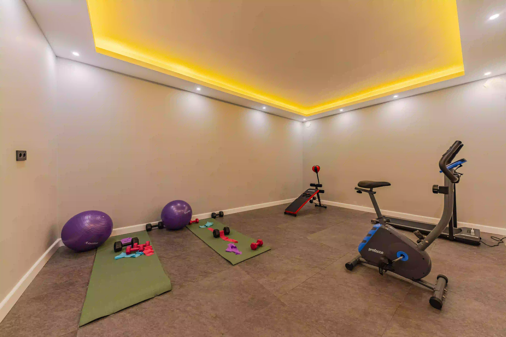
t is used to treat injured player so that may safely return to their activities and competitions. It is a multi-disciplinary approach that treat various injuries sustained through participation in sports so that athletes can regain mobility and return to sports.
Read More >>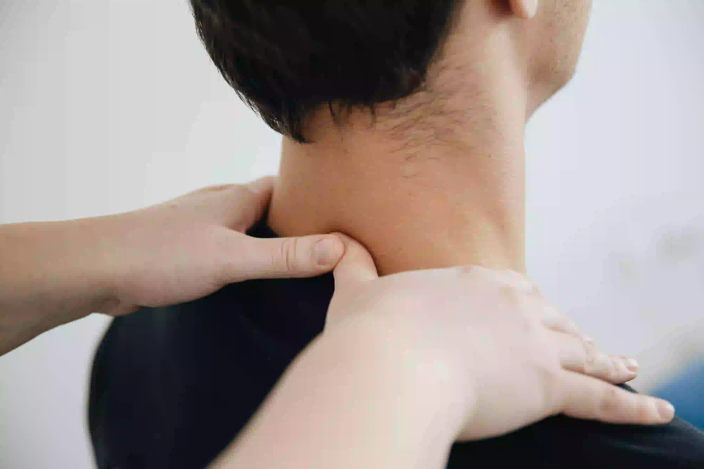
Neurorehabilitation is a complex process that involves recovery from disorders of nervous system. Neurorehabilitation is used to treat conditions like stroke, cerebral palsy, spinal cord injuries, Parkinson’s disease, multiple sclerosis, etc.
Read More >>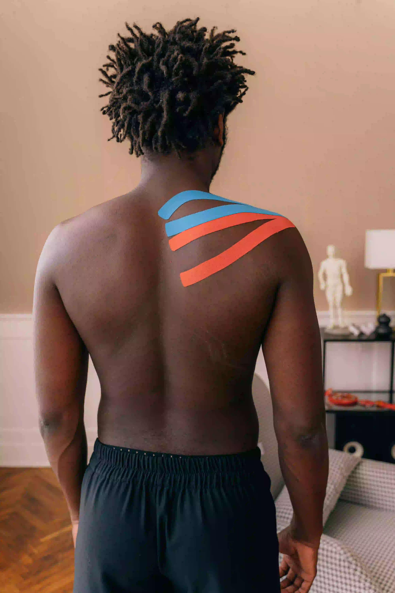
Kinesio taping method is a therapeutic technique that is utilized by rehabilitation experts is used to change muscle tone, correct movement, improve posture, reduce pain, decrease fluid buildup and improves flow.
Read More >>it involves sort lever and high velocity thrusts applied chiropractic specialists to reduce pressure on joints and relieve pain and dysfunction.
Read More >>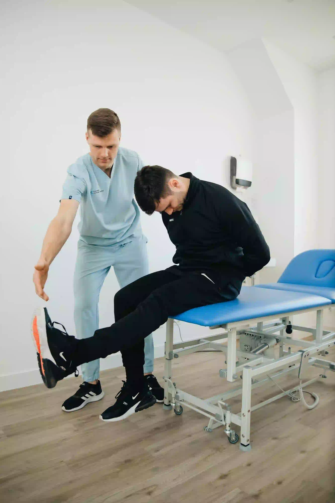
It is process to treat variety of musculoskeletal conditions like back pain, neck pain, osteoarthritis, ligament sprains, muscle strains, fracture rehabilitation, pre and post-surgery rehabilitation. It is used to regain strength, mobility and flexibility of muscles and connective tissues.
Read More >>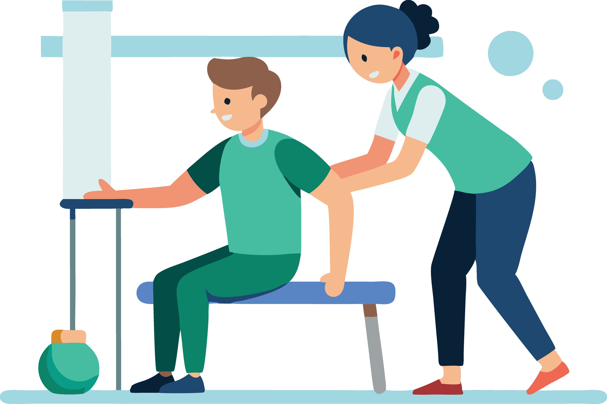
Can't visit our clinic? We bring professional physiotherapy treatment directly to your home. Our experienced physiotherapists provide safe, personalized care for patients who need treatment in a comfortable home environment.
Our physiotherapy services focus on improving your movement, reducing pain, and helping you return to your daily activities. We provide personalized care using modern techniques and professional guidance to support your recovery.
Read MoreYou will receive a full individualized treatment
Our therapists are trained and certified in therapy technique
We will work closely with all your health practitioners
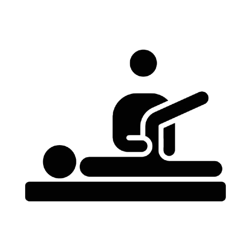
Setting goal is the best way to enjoy a successfull outcome
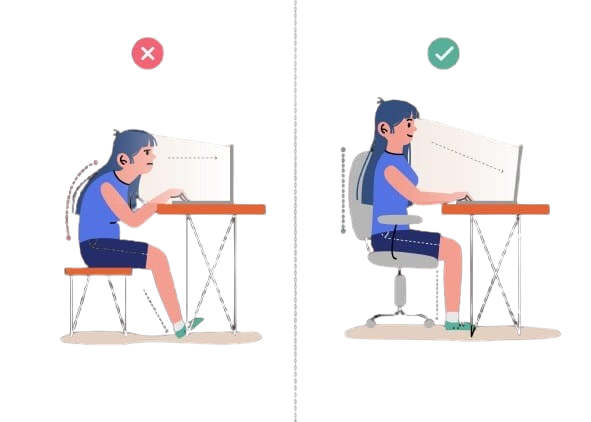
Enter your contect detail's to help us serve you better & faster
Real stories from patients treated by Dr. Ismail Khan
 ▶
▶
 ▶
▶
 ▶
▶
Dr.Ismail is hands down the best Physiotherapist out there.he truly know his field insside
out takes as time to Explian everthing in simple easy to understand language he make sure
you not only receive the right treatment but also fully understand what going on with your
body
Highly Recommended
Dr Physio Raheb is highly professional. i had an extreme backache from past few week which is being taken good care of the physio sessions which i took really help me in reducing the pain. Doctor Ismail's diagones of my pain was really helpfull.dr Ayesha's guidance and efforts helped me in healing the pain i would highly recommended DR Physio Raheb
I received treatment for my shoulder pain and noticed a great improvement after regular physiotherapy sessions. The doctor carefully understood my problem and provided exercises that helped me regain strength and mobility. Very professional and caring service.
The physiotherapy treatment at Dr Physio Rehab was very effective. The staff provided excellent care and explained every step of the recovery process. My shoulder movement improved and my daily activities became much easier.
I visited Dr Physio Rehab for knee pain and received outstanding treatment. The customized exercises and therapy sessions helped reduce my discomfort and improved my confidence while walking and performing daily tasks.
I had frequent headaches caused by muscle tension and posture problems. After proper assessment and physiotherapy treatment, my symptoms improved greatly. The doctor provided helpful guidance for maintaining better health.
Take the first step toward a healthier, pain-free life with expert physiotherapy care.
Book an Appointment
Dr Physio Rehab provides professional physiotherapy treatments focused on pain relief, injury recovery, and improving your quality of life.